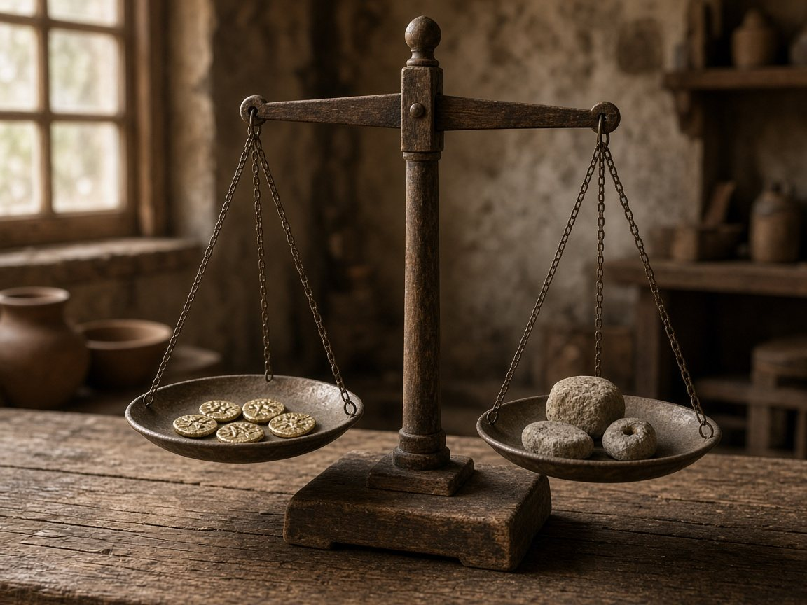
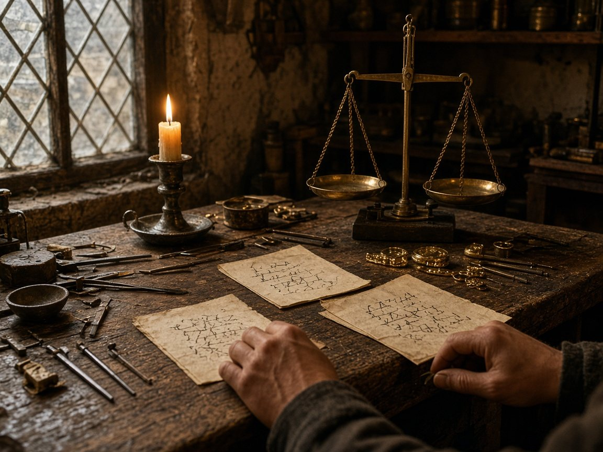
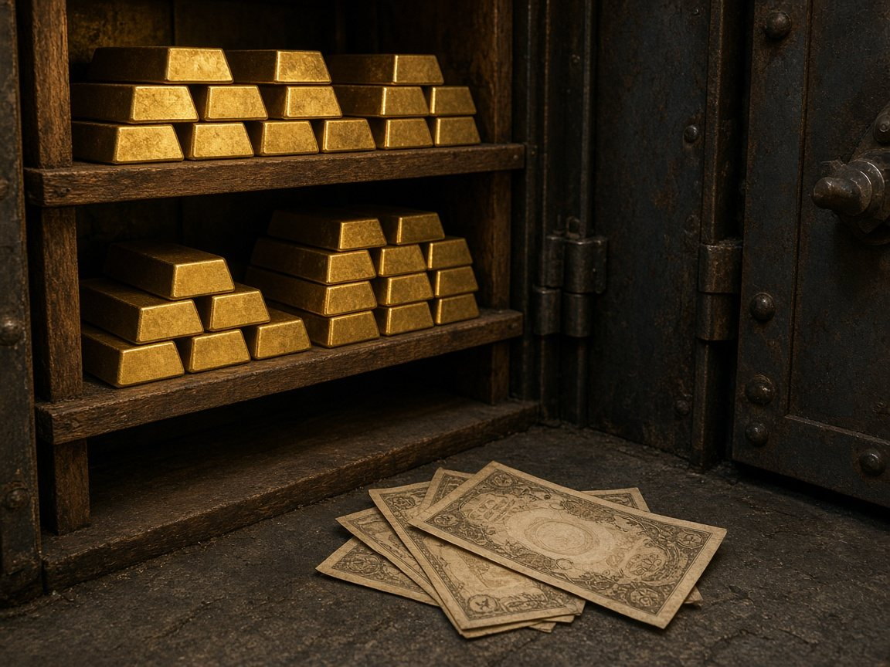

En el artículo anterior hablamos de cómo aprendimos a ponerle valor a las cosas. Pero ¿por qué el oro tiene hoy el papel de refugio que todos conocemos? Todavía hoy, cuando hay una crisis, mucha gente corre a comprar oro, y las noticias hablan de su precio como si fuera un lugar seguro. Hace miles de años, un comerciante en Lidia ya confiaba en una pequeña pieza de oro con una marca. Nada es nuevo: solo ha cambiado la forma. Y si olvidamos de dónde venimos, es más fácil tropezar con la misma piedra.
Vimos entonces que las sociedades necesitaban una manera de comparar el valor de las cosas. El pescado, el trigo, los animales o las herramientas podían intercambiarse, pero hacía falta encontrar algo que facilitara esos acuerdos.
Y entre todos los materiales que se utilizaron a lo largo de la historia, hubo uno que terminó ocupando un lugar muy especial: el oro.
¿Por qué precisamente el oro?
El oro tenía algunas características que lo hacían especialmente atractivo. No se estropeaba con el paso del tiempo, era relativamente fácil de reconocer, podía fundirse y dividirse en cantidades más pequeñas y, sobre todo, no era fácil de encontrar en grandes cantidades.
No era el único material utilizado como dinero. La plata también tuvo un papel fundamental en muchas civilizaciones. Pero el oro fue adquiriendo un prestigio especial.
De los metales a las monedas
Uno de los primeros grandes ejemplos aparece en Lidia, un antiguo reino situado en lo que hoy conocemos como Turquía. Allí, alrededor del siglo VII antes de Cristo, comenzaron a circular pequeñas piezas de metal llamadas monedas, fabricadas inicialmente con una mezcla natural de oro y plata conocida como electro. Estas piezas tenían pesos determinados y llevaban marcas que permitían reconocer su procedencia.
Más adelante, durante el reinado de Creso, en el siglo VI antes de Cristo, se acuñaron monedas de oro y plata con una composición más controlada. Aquellas monedas de oro y plata se conocen como creseidas.
Imagina lo que significaba aquello para un comerciante: ya no necesitaba negociar cada intercambio desde cero ni pesar y comprobar continuamente cada pieza de metal. Existía una moneda reconocida que facilitaba las operaciones.

Existía una moneda reconocida que facilitaba las operaciones.
El problema de llevar y guardar el oro
Con el paso del tiempo, las cantidades de dinero que manejaban comerciantes y familias fueron creciendo. Llevar encima grandes cantidades de monedas de oro o plata no siempre resultaba cómodo ni seguro.
Y aquí aparece una historia especialmente interesante. En la Inglaterra del siglo XVII, los orfebres comenzaron a guardar dinero y objetos de valor de sus clientes. A cambio, entregaban documentos que acreditaban lo que habían recibido. Aquellos recibos podían utilizarse para reclamar el dinero depositado. Poco a poco, esos documentos también empezaron a utilizarse para realizar pagos.
Cuando se fundó el Banco de Inglaterra en 1694, sus primeros billetes también funcionaban como recibos y promesas de pago. Se escribían a mano.
Piensa en ello: en lugar de entregar físicamente el oro, una persona podía utilizar un papel que representaba un valor que podía reclamar.

El comienzo de una nueva relación con el dinero
Durante el siglo XIX, el oro fue adquiriendo un papel cada vez más importante en el sistema monetario internacional. Muchos países comenzaron a fijar el valor de sus monedas en una cantidad determinada de oro. De esta manera, sus monedas mantenían una relación estable entre sí. Este sistema se conoce como patrón oro.
Para entenderlo de una manera sencilla, imagina que un billete representa una cantidad concreta de oro que el banco se compromete a entregar si se cumplen las condiciones de convertibilidad. El papel circulaba, pero detrás existía una promesa vinculada al metal.
El sistema clásico del patrón oro se extendió internacionalmente desde aproximadamente 1870 hasta el comienzo de la Primera Guerra Mundial, en 1914.

El papel circulaba, pero detrás existía una promesa vinculada al metal.
Pero aquellos orfebres que guardaban el oro se dieron cuenta de algo: la gente no venía toda a la vez a retirarlo. Y eso les llevó a emitir más papeles de los que tenían en oro.
¿Qué ocurre cuando hay más papeles que oro en la caja?
En nuestro siguiente artículo veremos cómo nació, sin quererlo, un sistema basado en la confianza.
Fuentes
- Sobre Lidia, las monedas de electro del siglo VII a. C. y la acuñación posterior de oro y plata por separado: British Museum, guía de la Money Gallery (sala 68), consultado el 13 de noviembre de 2026.
- Sobre las monedas de Creso conocidas como creseidas: Università Cattolica del Sacro Cuore, «Creseidi e darici», consultado el 13 de noviembre de 2026.
- Sobre los orfebres de Londres en el siglo XVII, la fundación del Banco de Inglaterra en 1694 y sus primeros billetes manuscritos, que funcionaban como recibos y promesas de pago: Museo del Banco de Inglaterra, «Our earliest Bank of England note», consultado el 13 de noviembre de 2026.
- Sobre el patrón oro clásico, extendido internacionalmente hasta el comienzo de la Primera Guerra Mundial: Banco de España, Elena Martínez-Ruiz y Pilar Nogues-Marco, Crisis cambiarias y políticas de intervención en España, 1880-1975, Estudios de Historia Económica n.º 66, 2014, consultado el 13 de noviembre de 2026. Véase también Encyclopaedia Britannica, «gold standard», consultado el 13 de noviembre de 2026.